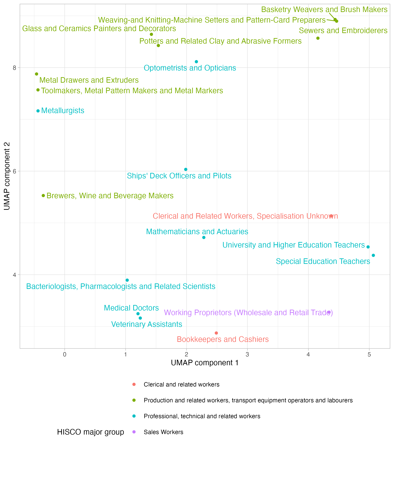
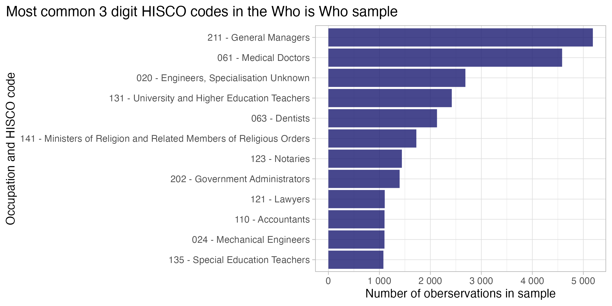
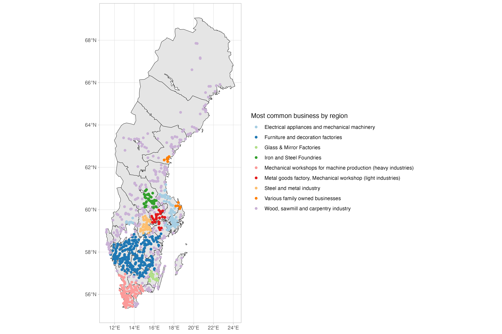

schema = {
"type": "object",
"required": [
"full_name",
"location",
"occupation",
"birth_details",
"education",
"career",
"family",
],
"properties": {
"full_name": {"type": "string"},
"location": {"type": "string"},
"occupation": {"type": "string"},
"birth_details": {
"type": "object",
"properties": {
"date": {"type": "string"},
"place": {"type": "string"},
"parents": {"type": "string"},
},
"required": ["date", "place"],
},}}"Praise the people or praise the place? Upper tail human capital in electrifying Sweden
Midway Seminar - 24-01-2024
Jonathan Jayes - Lund University
Research question
How can we use new kinds of source material and new methods to find out where the skilled workers who built the Swedish electricity sector came from, and where they were trained?
Answering involves:
- 2 data structuring tasks
- 2 classification tasks
Motivation
Electrification is a cannonical example of a General Purpose Technology (GPT)
When this new technology was adopted in Sweden:
- It made individuals richer 💰🔋
- It lowered inequality 📉🤝
- It allowed structural change on the labor market 🔧💼
- Middle-skill workers were drawn from the local area to the new jobs 🏙🏃♀️
What we want to know next:
- Who were the innovators or adopters? 🤔🚀
- Did they move to opportunity? 🏃♀️💼
- How much training did they have in the new technology? 🎓⚡️
- Were did they get this training? 🏫🔌
Related literature
3 main strands:
Recent papers making use of individual level biographic data
Who were the innovators or adopters?
Who is who?
Vem är Vem? is a Swedish biographical encyclopedia that was published in two editions of five volumes each in 1945–1950 and 1962–1968 by Bokförlaget Vem är Vem.
The intention was, according to the publishers, to draw attention to people who were at the height of their activities, even if they were younger, in influential or otherwise noted positions in different areas.
Biographies and career trajectories of ~ 75,000 individuals!
9 of the 11 volumes are digitized by librarians in Uppsala – thank you <3

Vem är Vem?

Vem är Karl Lund?
Lund, Karl Gustaf, chief engineer, born on July 22, 1893, in Hille, Gävleborgs län, Sweden, son of clerk Ferdinand L. and Maria Andersson. Married in 1936 to Sigrid Johansson. Children: Ingvar (born 1938), Lennart (born 1942). — Graduated from Bergsskolan in Filipstad in 1917, specialized studies at the Royal Institute of Technology (KTH) from 1920 to 1922, studied at the Institute of Metallurgy and Stockholm University in 1921-1922. Chemist at Strömsnäs Järnverks A-B in Degerfors from 1918 to 1920, metallurgist and chemist at Westinghouse Electric & Manufacturing Co. in East Pittsburgh, PA, USA, from 1923 to 1926 and 1928 to 1929, chief metallurgist at Laclede Steel Co. in Alton, Illinois, USA, in 1927, furnace and steelworks engineer at A-B Iggesunds Bruk from 1929 to 1931, site manager at Gunnebo Bruks Nya A-B, Varbergsverket, since 1931. Member of the municipal executive committee, deputy chairman of the economic department, deputy member of the board of the power plant, chairman of Varbergs Sparbank, employer representative in the district council of the county labor board, member of the board of Varbergs Luftskyddsförening (Varberg Air Protection Association), secretary of Varbergs Högerförening (Varberg Conservative Association), chairman of the railway sick fund, and Plant Society for Small Bird Friends.
Where were the firms in which these individuals worked?
Swedish industrial firm catalogue of 1947
The Svensk Industrikalender, published by Sveriges Industriförbund (Sweden’s Industrial Association), is a comprehensive directory of Swedish industrial firms. This calendar was issued annually from 1918 to 2000 and contains information related to Swedish industry. The 1947 edition available on the Project Runeberg website was digitized in April 2012, sourced from the Centrum för Näringslivshis- toria.
Firms across the country
How can we structure the data?
Data pipeline
| Step | Process | |
|---|---|---|
| 1 | Scrape book data from website | 🌐➡️📚 |
| 2 | Split records on each page of a book | 📚➡️📄 |
| 3 | Structure biographies using schema | 📄🔄📄 |
| 4 | Classify record into group | 🔗🔍🌍🎓📚 |
| 5 | Store data for analysis | 🔗📚📂 |
NLP challenges
- Many abbreviations and contractions
- DOB: “f.\s*(\d{2})\/(\d{2})/(\d{2})”
- Gävleborg County: “Gävleb. l.”
- Similar structure for each entry but not exactly the same information in the same order

Structure using OpenAI API 🤖
Using OpenAI’s GPT-3.5 chat API:
We provide the system a schema to structure the record in, e.g. keys.
We provide the system the Swedish text
We specify the JSON response format we want
def structure_biography_info(page_text):
try:
# Create a prompt for the system
structure_prompt = f"Task: read the schema and return RFC compliant JSON information about the Swedish individuals from the 1950 biographical dictionary 'Vem är Vem' that is provided below. Use a numeric index for each biography in your JSON output and return information about all of them, including all career information available. Keep the biographic descriptions in Swedish and remove any abbreviations based on your knowledge, e.g. 'fil. kand.' is 'filosofie kandidat', and 'Skarab. l.' is 'Skaraborgs Län'. Put years in full based on context. Put dates in dd/mm/yyyy format where possible. If there is no information for a key, leave it out. If there is no information for a required key, put NULL as the value.\nHere is the schema: {schema}.\nHere is the text: {page_text}. Go!"
structure_response = client.chat.completions.create(
model="gpt-3.5-turbo-1106",
response_format={"type": "json_object"},
messages=[
{
"role": "system",
"content": "You are an expert on Swedish biographies.",
},
{"role": "user", "content": f"{structure_prompt}"},
],
)
structured_biography_info = json.loads(
structure_response.choices[0].message.content
)
return structured_biography_info
except Exception as e:
print(f"Error in structure_biography_info: {e}")
return NoneAdd coordinates to firms and individuals
Birthplaces of individuals who studied at Royal Tehcnical Institute (KTH) in Who is Who in Industry and Business
How can we classify occupations according to a schema?
graph LR
A[Queried Job Title: Civilingenjör, teknisk fysik Code: 2142] --> B[Text Embeddings]
B --> C[Classifier Algorithm]
C --> D[Similarity Ranking]
D --> E1[1. 2142 - Civilingenjörsyrken inom bygg och anläggning]
D --> E2[2. 8212 - Montörer, elektrisk och elektronisk utrustning]
D --> E3[3. 7215 - Stålkonstruktionsmontörer och grovplåtslagare]
D --> E4[4. 7319 - Musikinstrumentmakare och övriga konsthantverkare]
D --> E5[5. 1212 - Ekonomi- och finanschefer nivå 2]
style E1 fill:#ffff
style A fill:#ffff
Two-part classification process
Makes use of occupational title, e.g. “Civilingenjör, teknisk fysik” and workplace information, e.g. “Strömsnäs Järnverks A-B”.
{
"career": [
{
"occupational_title": "Chemist",
"workplace": "Strömsnäs Järnverks A-B",
"industry": "Metallurgy",
"start_date": "1918"
},
{
"occupational_title": "Metallurgist and Chemist",
"workplace": "Westinghouse Electric & Manufacturing Co.",
"industry": "Manufacturing",
"start_date": "1923"
},
{
"occupational_title": "Chief Metallurgist",
"workplace": "Laclede Steel Co.",
"industry": "Steel Production",
"start_date": "1927"
},
{
"occupational_title": "Furnace and Steelworks Engineer",
"workplace": "A-B Iggesunds Bruk",
"industry": "Metallurgy",
"start_date": "1929"
},
{
"occupational_title": "Site Manager",
"workplace": "Gunnebo Bruks Nya A-B, Varbergsverket",
"industry": "Metallurgy",
"start_date": "1931"
}
]
}Why was classification hard?
Fuzzy string matching doesn’t capture semantic similarity between words
- “chauffeur” is close to “car driver” semantically, but not close in text.
Many possible groups makes classification challenging for traditional ML models
- HISCO schema has 1,600 unit groups.
Building one labelled classification scheme manually does not generalize easily
- If you code all of your occupations to HISCO and then want to move to SSYK, you have to redo all of the codings or try and find a crosswalk.
I spent months doing this last year to classify occupations to HISCLASS groups, hand labelling data and optimizing a support vector machine model.
It did not work

Why is classification easier now?
We make use of pre-trained large language models
- Benefit from semantic similarity
- Text embeddings mean we can have an arbitrary number of classes
- Switch out classification target schema easily!

What is an embedding?

What is an embedding?

Use embeddings to cluster skills
Figure 1: Scatter plot showing the relative similarity of occupational titles in the HISCO schema
Use clusters to classify individuals into the groups
Figure 2: Most common HISCO occupations in Vem är Vem
Use clusters to classify new skills into the groups
graph TB
A[Collect HISCO Codes<br>and Descriptions] -->|Use OpenAI API| B[Convert HISCO Titles<br>and Descriptions to Vectors]
C[Receive Occupational<br>Strings] -->|Use OpenAI API| D[Convert Occupational<br>Strings to Vectors]
B --> E[Compare Vectors in<br>Vector Space]
D --> E
E --> F[Assign HISCO Code to<br>Occupational String<br>using Cosine Distance]
style A fill:#2B8CBE
style B fill:#be5d2b
style C fill:#2B8CBE
style D fill:#be5d2b
style E fill:#6f6fbf
style F fill:#F4FA58
Here the HISCO descriptions are in English, as are the translated titles from my biographies in Swedish.
## Cluster firms by location
Figure 3: Map of the geographic clusters of businesses by most common business type
You can do it too!

References
Bandiera, Oriana, Andrea Prat, Stephen Hansen, and Raffaella Sadun. 2020. “CEO Behavior and Firm Performance.” Journal of Political Economy 128 (4): 1325–69. https://doi.org/10.1086/705331.
Dahl, Christian Møller, and Christian Vedel. 2023. “Breaking the HISCO Barrier: AI and Occupational Data Standardization.” Odense, Denmark: University of Southern Denmark.
Ford, Nicholas Martin, Kristin Ranestad, and Paul Sharp. 2023. “Not the Best Fillers in of Forms? The Danish and Norwegian Graduate Biographies and ‘Upper Tail Knowledge’.” Working Papers 0242. European Historical Economics Society (EHES). https://ideas.repec.org/p/hes/wpaper/0242.html.
Goldin, Claudia. 1994. “Labor Markets in the Twentieth Century.” National Bureau of Economic Research. https://doi.org/10.3386/h0058.
Merouani, Youssouf. 2023. “Innovation and Gender During Industrialization: The Case of Patenting Activity in France 1791-1913.” Midway Seminar, Economic History Department, LUSEM, Lund University. https://youssoufmerouani.com/talks/midway_seminar.html#/title-slide.
Mokyr, Joel. 2017. “A Culture of Growth: The Origins of the Modern Economy.” Princeton University Press.
Moretti, Enrico. 2012. The New Geography of Jobs. Houghton Mifflin Harcourt.
Nekoei, Arash, and Fabian Sinn. 2020. “HERSTORY the Rise of Self-Made Women.” SSRN Electronic Journal, December. https://doi.org/10.2139/ssrn.3741332.
# Appendix {#sec-appendix background-color=“#1C9E77” visibility=“uncounted”}
How to get a text embedding?
# Define a function to get the text embedding
def get_embedding(text, model="text-embedding-ada-002"):
text = text.replace("\n", " ")
return openai.Embedding.create(input=[text], model=model)['data'][0]['embedding']
# Apply the get_embedding function to your 'hisco_text' column
df['ada_embedding'] = df['hisco_text'].apply(lambda x: get_embedding(x, model='text-embedding-ada-002'))Assign HISCOs: example
026 Metallurgists (HISCO description)
Workers in this unit group advise on metallurgical problems and develop and control processes for the extraction of metals from their ores, study the properties and engineering characteristics of metals and develop new alloys, and develop and supervise metal manufacturing processes for making finished metal products.
Karl Lund in 1923 (Input)
Metallurgist and Chemist at Westinghouse Electric & Manufacturing Co.
Assign HISCOs: codes projected from 1536 dimensions to 2 with UMAP
Assign HISCOs: Watchmaker Apprentice
| Closest HISCO codes to Watchmaker Apprentice | ||
| Rank | HISCO CODE | Occupational Description |
|---|---|---|
| 1 | 842 | Watch, Clock and Precision Instrument Makers |
| 2 | 830 | Blacksmiths, Toolmakers and Machine-Tool Operators |
| 3 | 810 | Woodworkers |
| 4 | 811 | Cabinetmakers |
| 5 | 839 | Blacksmiths, Toolmakers and Machine-Tool Operators |
Assign HISCOs: Shipyard Assistant Engineer
| Closest HISCO Codes to ‘Shipyard Assistant Engineer’ | ||
| Rank | HISCO CODE | Occupational Description |
|---|---|---|
| 1 | 43 | Ships' Engineers |
| 2 | 24 | Mechanical Engineer |
| 3 | 982 | Ships' Engine-Room Workers |
| 4 | 42 | Ships' Deck Officers and Pilots |
| 5 | 959 | Construction Workers |
Keep titles in Swedish?
Instead of using the HISCO schema in English, I am using the SSYK classification from 2012.
Instead of using the multilingual OpenAI ADA model, I now use The National Library of Sweden Swedish BERT model. It is trained on 200M sentences, 3000M tokens from books, news, government publications, swedish wikipedia and internet forums.
The input is from the Job Tech Data so we have a ground truth that they have labelled.
SSYK and Swedish BERT examples:
| Closest SSYK Codes to ‘Ambulanssjukvårdare’ (Code: 5326) | |
| Rank | Closest Match Title and Code |
|---|---|
| 1 | 5326 - Ambulanssjukvårdare |
| 2 | 2226 - Ambulanssjuksköterskor m.fl. |
| 3 | 2227 - Geriatriksjuksköterskor |
| 4 | 5112 - Tågvärdar och ombordansvariga m.fl. |
| 5 | 2231 - Operationssjuksköterskor |
SSYK and Swedish BERT examples:
| Closest Matches to ‘Processingenjör, kemiteknik (Code: 2512)’ | |
| Rank | Closest Match Title and Code |
|---|---|
| 1 | 3115 - Ingenjörer och tekniker inom kemi och kemiteknik |
| 2 | 2145 - Civilingenjörsyrken inom kemi och kemiteknik |
| 3 | 3113 - Ingenjörer och tekniker inom elektroteknik |
| 4 | 7321 - Prepresstekniker |
| 5 | 2163 - Planeringsarkitekter m.fl. |
Can we score how successful this is?
We can use a crosswalk from one schema to another as a test set, e.g. O * Net to ISCO: